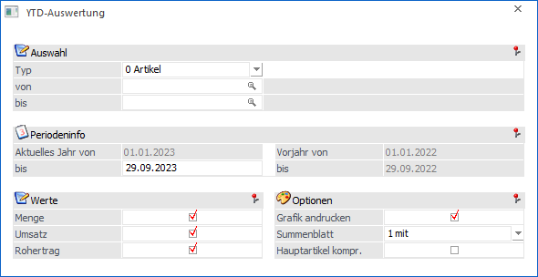
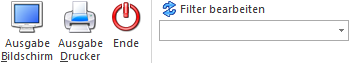

Die YTD-Auswertung, welche über den Menüpunkt…
1 WinLine INFO
1 Info
1 YTD-Auswertung
… aufgerufen werden kann, gibt für unterschiedliche Typen die Information "Menge", "Umsatz" und "Rohertrag" aus. Die Abkürzung "YTD" steht hierbei für "Year-to-Date" und bedeutet, dass die Werte des aktuellen Jahres mit denen des Vorjahres verglichen werden, wobei ein Stichtag vorgegeben wird.
Hinweis
Die Einstellungen in den Bereichen "Werte" und "Optionen" werden benutzerspezifisch gespeichert. Diese Definition wird in weiterer Folge auch in den YTD-Auswertungen der WinLine INFO-Module (Kontoinformation, Artikelinformation und Vertreterinformation) berücksichtigt.

Ø Typ
Aus der Auswahlliste kann ein Typ gewählt werden, welcher in der Auswertung betrachtet werden soll. Hierbei stehen folgende Varianten zur Verfügung:
ü 0 - Artikel
ü 1 - Artikelgruppen
ü 2 - Artikeluntergruppen
ü 3 - Kunden
ü 4 - Kundengruppen
ü 5 - Vertreter
ü 6 - Lieferanten
ü 7 - Lieferantengruppe
Ø von / bis
Gemäß dem definierten Typ kann an dieser Stelle eine Selektion vorgenommen werden.
Ø Periodeninfo
In dem Informationsbereich "Periodeninfo" ist der Zeitraum hinterlegt, welche analysiert werden soll.
ü Aktuelles Jahr von
Beginn des
aktuellen Wirtschaftsjahres
ü Aktuelles Jahr bis
An dieser
Stelle wird definiert, bis wann ausgewertet werden soll. Das Feld wird hierbei
automatisch mit dem aktuellen Tag, dem aktuellen Monat und dem aktuellen
Wirtschaftsjahr vorbelegt.
Beispiel
Die Auswertung wird am 29.09.2023 geöffnet, wobei im Wirtschaftsjahr 2022 gearbeitet wird. In diesem Fall wird das Datum mit dem 29.09.2022 vorbelegt.
ü Vorjahr von
Beginn des
Vorjahrs
ü Vorjahr bis
Dieses Feld wird
mit dem Inhalt von "Aktuelles Jahr bis" - abzüglich 12 Monate - gefüllt.
Ø Werte
An dieser Stelle kann definiert werden, welche Werte auf der Auswertung ausgegeben werden sollen.
Achtung
Für die Ausgabe der Auswertung muss mindestens ein Wert aktiviert worden sein.
Ø Grafik andrucken
Durch Aktivierung der Option "Grafik andrucken" wird nach jedem Objekt (Artikel, Artikelgruppe, etc.) eine Grafik über die Werte ausgegeben. Hierbei erfolgt nach der Grafik ein automatischer Seitenumbruch.
Ø Summenblatt
An dieser Stelle kann gewählt werden, ob es eine Aufsummierung der Werte geben soll.
ü 0 - ohne
ü 1 - mit
ü 2 - nur
Ø Hauptartikel komp. (nur bei Typ "Artikel")
Handelt es sich um einen Hauptartikel mit Ausprägungen, dann wird jede Ausprägung einzeln in der Auswertung aufgeführt. Durch Aktivierung dieser Option wird dieses unterbunden und nur der Hauptartikel, mit den summierten Werten der Ausprägungen, dargestellt.
Buttons

Ø Ausgabe Bildschirm
Durch Anwahl des Buttons "Ausgabe Bildschirm" bzw. der Taste F5 wird die Auswertung am Drucker ausgegeben.
Ø Ausgabe Drucker
Mit Hilfe des Buttons "Ausgabe Drucker" wird die Auswertung am Drucker ausgegeben.
Ø Ende
Durch Anwahl des Buttons "Ende" bzw. der Taste ESC wird das Fenster geschlossen.
Ø Filter bearbeiten
Durch Anklicken des Buttons "Filter bearbeiten" kann, gemäß dem gewählten Typ, nach frei definierbaren Kriterien eingeschränkt werden.